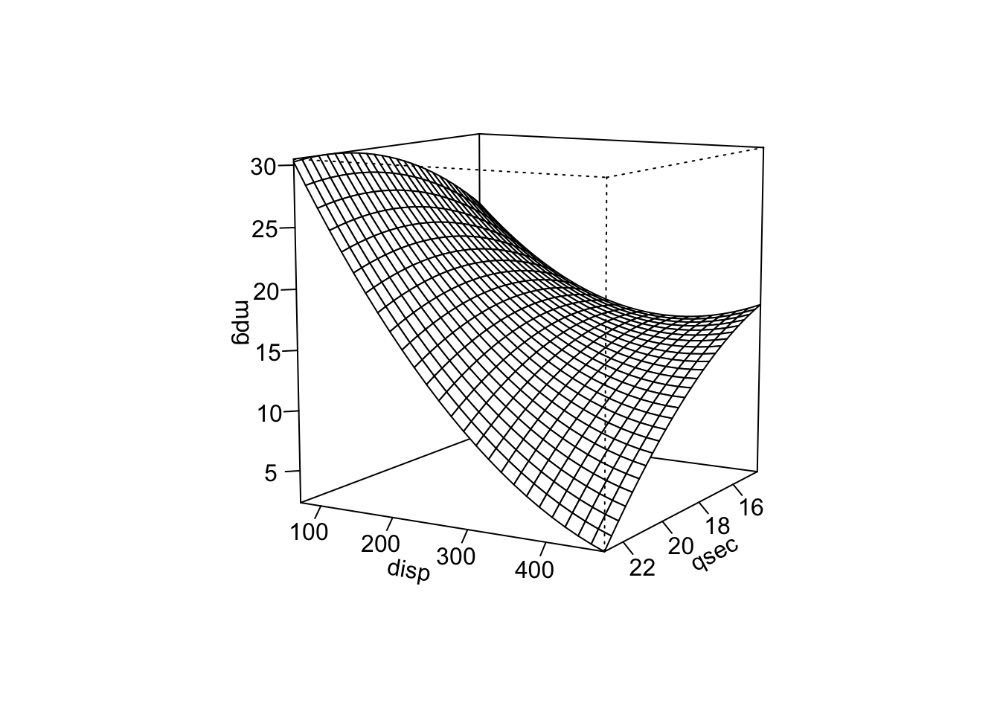
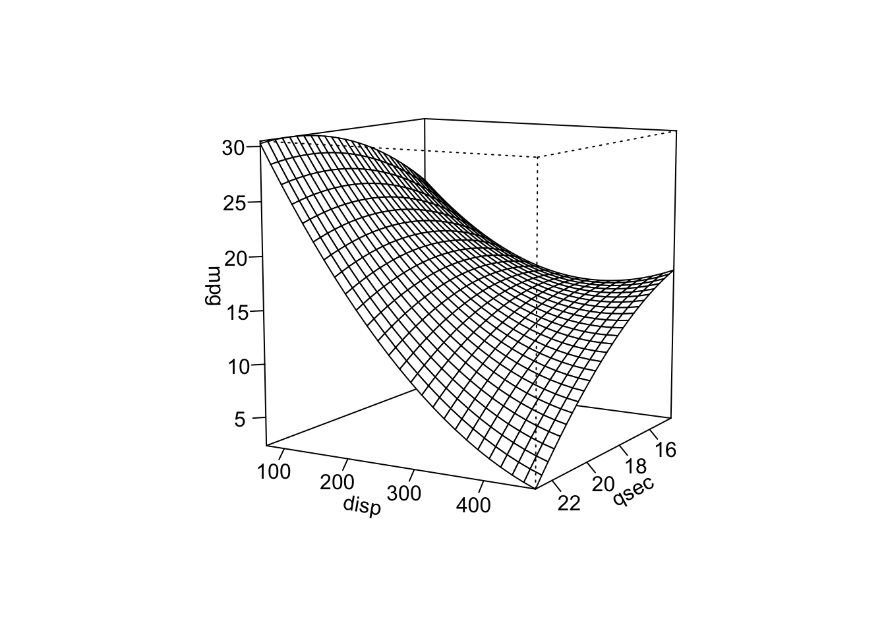
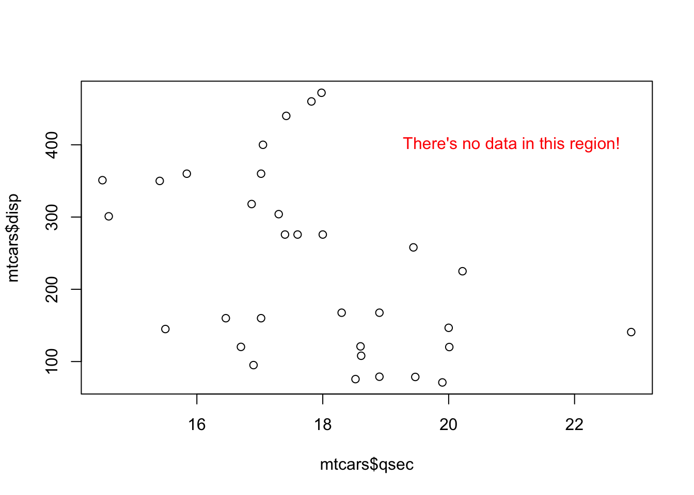

library(rsm)
data(mtcars)
mod1 <- lm(mpg ~ disp + qsec + disp:qsec + I(disp^2) + I(qsec^2), data = mtcars)
rsm::persp.lm(mod1, disp ~ qsec, zlab = "mpg", theta = 120, phi = 10, r = 10)
Response surface analysis is just regression with an interaction. Typically the model fit is
\[ y = \beta_0 + \beta_1x_1 + \beta_2x_2 + \beta_3x_1x_2 + \beta_4x_1^2 + \beta_5x_2^2, \]
but in general any interaction should work for the below visualization.
rsm::persp.lmThe “rsm” package allegedly does response surface modeling automatically, but we can use it just for the rsm::persp.lm function (which can just be referred to as persp after loading the package). Note that stats::persp does not work directly with a model object; you’d need to do a few extra steps to generate a matrix first.
library(rsm)
data(mtcars)
mod1 <- lm(mpg ~ disp + qsec + disp:qsec + I(disp^2) + I(qsec^2), data = mtcars)
rsm::persp.lm(mod1, disp ~ qsec, zlab = "mpg", theta = 120, phi = 10, r = 10)
(Note: persp.lm does not support other types of models such as mixed models from lmer, however plotly below should support all types of models that emmeans supports.)
Alternately, plotly can be used to create an interactive plot. The data needs to be set up in a bit of an odd fashion, instead of a matrix of x-y-z triads, a list is created with the unique x values, the unique y values, and a matrix of predicted values of the outcome containing all pairwise values of x and y. We use emmeans to generate these predicted values.
library(plotly)
library(emmeans)
# Set up grid
q <- 14:23
d <- (1:10)*50
em <- as.data.frame(emmeans(mod1, ~ qsec*disp, at = list(qsec = q, disp = d)))
# x & y are unique values, z is len(x) x len(y) matrix
dd <- list(q = q,
d = d,
m = matrix(em$emmean,
nrow = length(q),
ncol = length(d),
byrow = TRUE))
plot_ly(x = dd$q, y = dd$d, z = dd$m, type = "surface") |>
layout(scene = list(xaxis=list(title = "qsec"),
yaxis=list(title = "disp"),
zaxis=list(title = "mpg")))Response surface plots can be extremely misleading due to extrapolation. Consider the plots above. One thing we would be tempted to interpret from the plot is to predict that the lowest mileage cars are around 5 mpg, and this occurs when disp and qsec are at their maximum. However, this is complete extrapolation. We can look at the predicted values for the cars in the data:
summary(predict(mod1)) Min. 1st Qu. Median Mean 3rd Qu. Max.
13.10 15.36 19.53 20.09 24.28 30.13 The lowest predicted mileage is 13.1, yet the response surface dips below 5! What’s happening is that there are no cars in the car with both high disp and high qsec, so that area of the response curve is entirely extrapolated - we have no idea what should be occurring there.
plot(mtcars$disp ~ mtcars$qsec)
text(21, 400, "There's no data in this region!", col = "red")
Finally, let’s add the predicted values onto the response surface to further visualize the areas of the response surface that is pure extrapolation. (Note that I add one to the predicted values (predict(mod1) + 1) to move the points slightly above the surface, improving visualization.)
df <- data.frame(qsec = mtcars$qsec,
disp = mtcars$disp,
predict = predict(mod1) + 1)
plot_ly(x = dd$q, y = dd$d, z = dd$m, type = "surface") |>
layout(scene = list(xaxis=list(title = "qsec"),
yaxis=list(title = "disp"),
zaxis=list(title = "mpg"))) |>
add_trace(x = df$qsec, y = df$disp, z = df$predict, mode = "markers",
type = "scatter3d",
marker = list(size = 10, color = "red", symbol = 104))